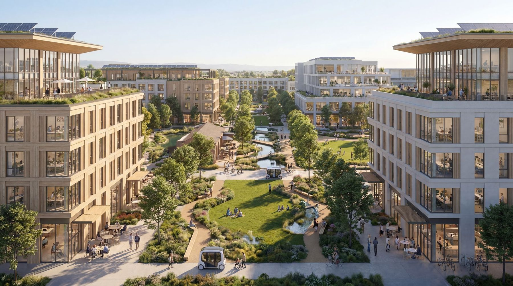
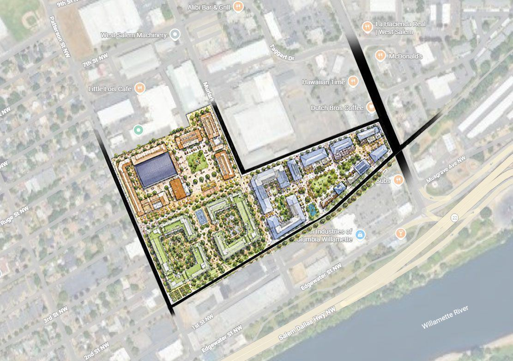
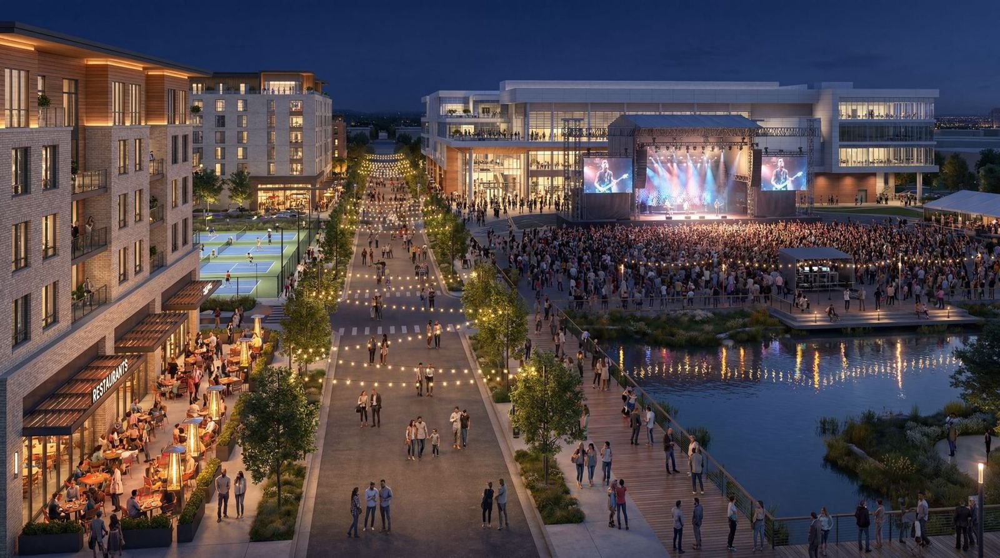

Project Documents
The district, in four parts
This site is the living home of the West Salem district - it will grow and evolve as the project advances through site control, capitalization, and construction.

Vision
The District
See it whole: the renderings, living here, the Forest Tower and Whoosh, and the impact & placemaking framework.
Get lost in it →
Strategy
Phased Development Business Plan
How the district gets built: land contribution, site control, interim activation, capital formation, four development phases, and exit.
Read the plan →
Phase 0B · Interim Activation
Site Activation
Now City Market on Wallace Road, the bow-truss live-work campus, the Arts District, and the Scandi Block preview.
Explore activation →
Investment · Confidential
Confidential Investment Summary
The district vision, Phase 1 program & financials, exit optionality, team, and market appendix.
Enter the summary →